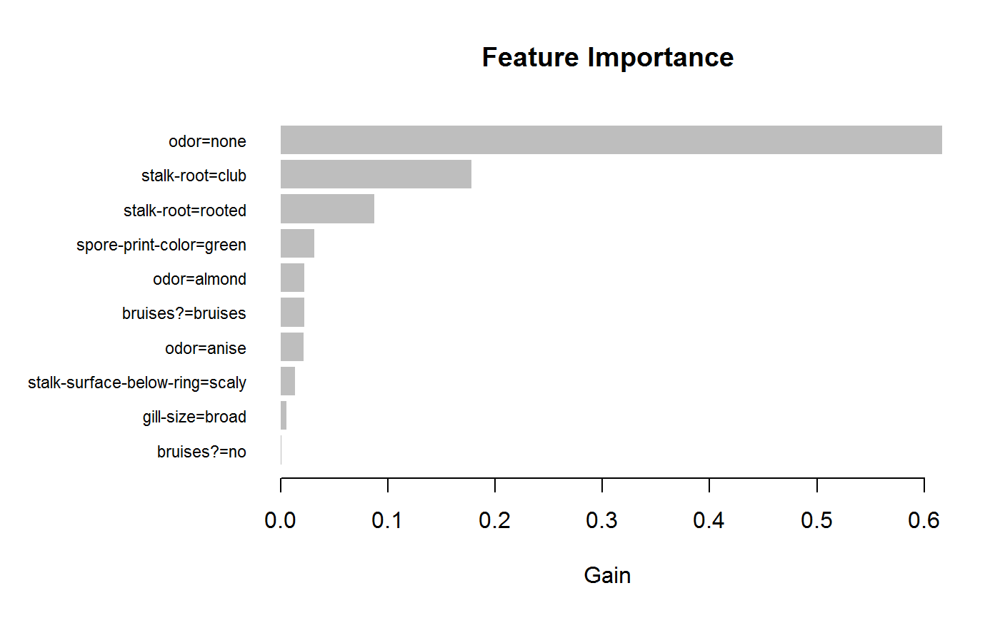

Plot previously calculated feature importance: Gain, Cover and Frequency, as a bar graph.
lgb.plot.importance(tree_imp, top_n = 10, measure = "Gain", left_margin = 10, cex = NULL)
| tree_imp | a |
|---|---|
| top_n | maximal number of top features to include into the plot. |
| measure | the name of importance measure to plot, can be "Gain", "Cover" or "Frequency". |
| left_margin | (base R barplot) allows to adjust the left margin size to fit feature names. |
| cex | (base R barplot) passed as |
The lgb.plot.importance function creates a barplot
and silently returns a processed data.table with top_n features sorted by defined importance.
The graph represents each feature as a horizontal bar of length proportional to the defined importance of a feature. Features are shown ranked in a decreasing importance order.
data(agaricus.train, package = "lightgbm") train <- agaricus.train dtrain <- lgb.Dataset(train$data, label = train$label) params <- list( objective = "binary" , learning_rate = 0.01 , num_leaves = 63 , max_depth = -1 , min_data_in_leaf = 1 , min_sum_hessian_in_leaf = 1 ) model <- lgb.train(params, dtrain, 20) tree_imp <- lgb.importance(model, percentage = TRUE) lgb.plot.importance(tree_imp, top_n = 10, measure = "Gain")